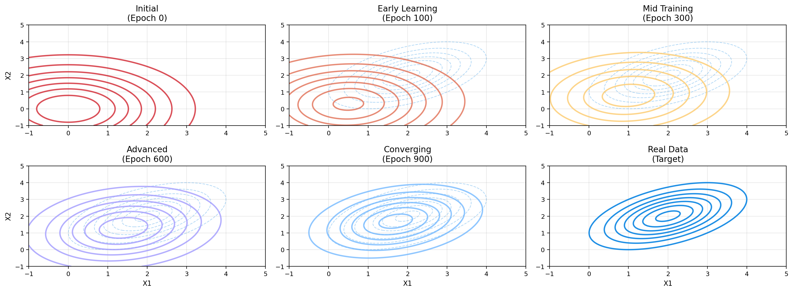
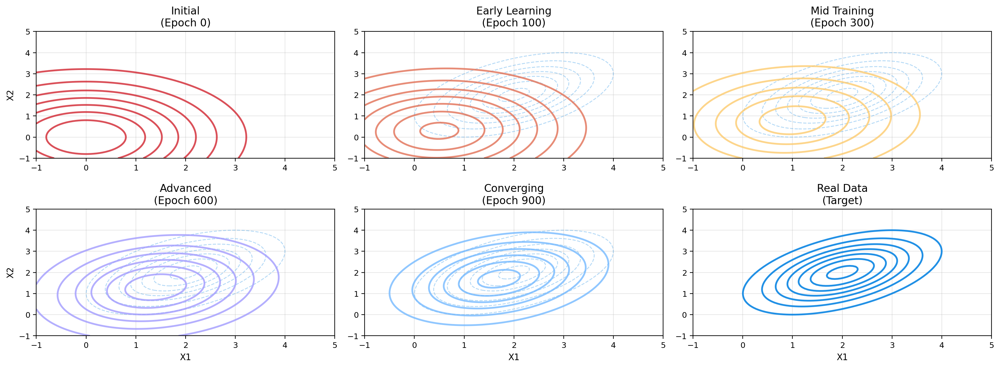
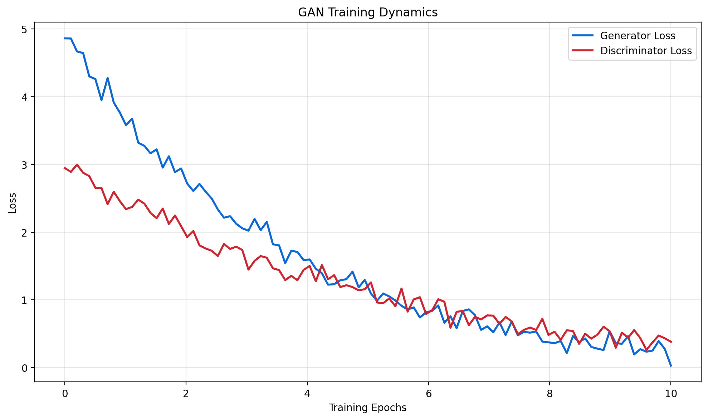
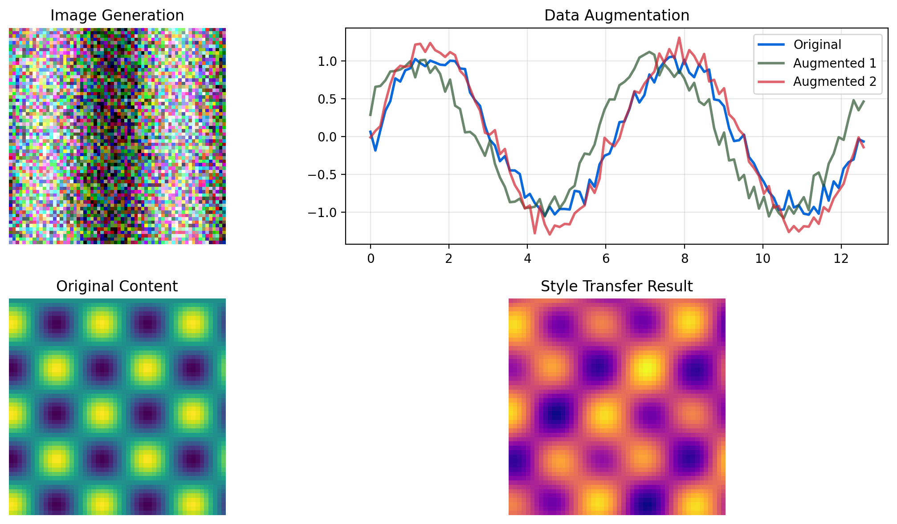
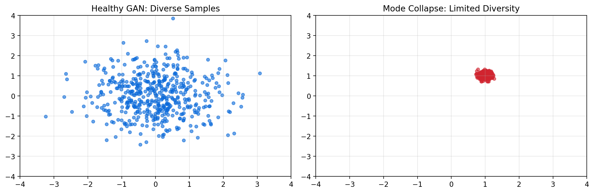
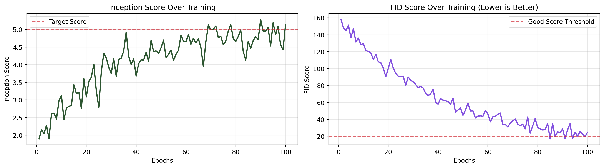

Understanding GANs with Python Implementation
2025-09-14

The GAN objective function:
\[\min_G \max_D V(D,G) = \mathbb{E}_{x \sim p_{data}(x)}[\log D(x)] + \mathbb{E}_{z \sim p_z(z)}[\log(1 - D(G(z)))]\]
Where: - \(G\) = Generator network - \(D\) = Discriminator network
- \(x\) = Real data samples - \(z\) = Random noise vector




import torch
import torch.nn as nn
import torch.optim as optim
import numpy as np
class Generator(nn.Module):
def __init__(self, latent_dim, output_dim):
super(Generator, self).__init__()
self.model = nn.Sequential(
nn.Linear(latent_dim, 128),
nn.ReLU(),
nn.Linear(128, 256),
nn.ReLU(),
nn.Linear(256, output_dim),
nn.Tanh()
)
def forward(self, z):
return self.model(z)
class Discriminator(nn.Module):
def __init__(self, input_dim):
super(Discriminator, self).__init__()
self.model = nn.Sequential(
nn.Linear(input_dim, 256),
nn.LeakyReLU(0.2),
nn.Linear(256, 128),
nn.LeakyReLU(0.2),
nn.Linear(128, 1),
nn.Sigmoid()
)
def forward(self, x):
return self.model(x)# Initialize networks
latent_dim = 100
data_dim = 2
generator = Generator(latent_dim, data_dim)
discriminator = Discriminator(data_dim)
# Optimizers
lr = 0.0002
g_optimizer = optim.Adam(generator.parameters(), lr=lr)
d_optimizer = optim.Adam(discriminator.parameters(), lr=lr)
# Loss function
criterion = nn.BCELoss()
# Training loop (simplified)
def train_gan(epochs=1000):
for epoch in range(epochs):
# Train Discriminator
real_data = generate_real_samples() # Your real data
fake_data = generator(torch.randn(batch_size, latent_dim))
d_loss_real = criterion(discriminator(real_data), torch.ones(batch_size, 1))
d_loss_fake = criterion(discriminator(fake_data.detach()), torch.zeros(batch_size, 1))
d_loss = d_loss_real + d_loss_fake
d_optimizer.zero_grad()
d_loss.backward()
d_optimizer.step()
# Train Generator
fake_data = generator(torch.randn(batch_size, latent_dim))
g_loss = criterion(discriminator(fake_data), torch.ones(batch_size, 1))
g_optimizer.zero_grad()
g_loss.backward()
g_optimizer.step()
return d_loss.item(), g_loss.item()# Complete GAN training pipeline
class GANTrainer:
def __init__(self, generator, discriminator, device='cpu'):
self.generator = generator.to(device)
self.discriminator = discriminator.to(device)
self.device = device
# Initialize optimizers
self.g_optimizer = optim.Adam(generator.parameters(), lr=0.0002, betas=(0.5, 0.999))
self.d_optimizer = optim.Adam(discriminator.parameters(), lr=0.0002, betas=(0.5, 0.999))
self.criterion = nn.BCELoss()
def train_step(self, real_data, batch_size, latent_dim):
# Training step implementation
device = self.device
# Labels
real_labels = torch.ones(batch_size, 1).to(device)
fake_labels = torch.zeros(batch_size, 1).to(device)
# Train Discriminator
self.discriminator.zero_grad()
# Real data
real_output = self.discriminator(real_data)
d_loss_real = self.criterion(real_output, real_labels)
# Fake data
noise = torch.randn(batch_size, latent_dim).to(device)
fake_data = self.generator(noise)
fake_output = self.discriminator(fake_data.detach())
d_loss_fake = self.criterion(fake_output, fake_labels)
d_loss = d_loss_real + d_loss_fake
d_loss.backward()
self.d_optimizer.step()
# Train Generator
self.generator.zero_grad()
fake_output = self.discriminator(fake_data)
g_loss = self.criterion(fake_output, real_labels)
g_loss.backward()
self.g_optimizer.step()
return d_loss.item(), g_loss.item()GAN Introduction - Python Demo